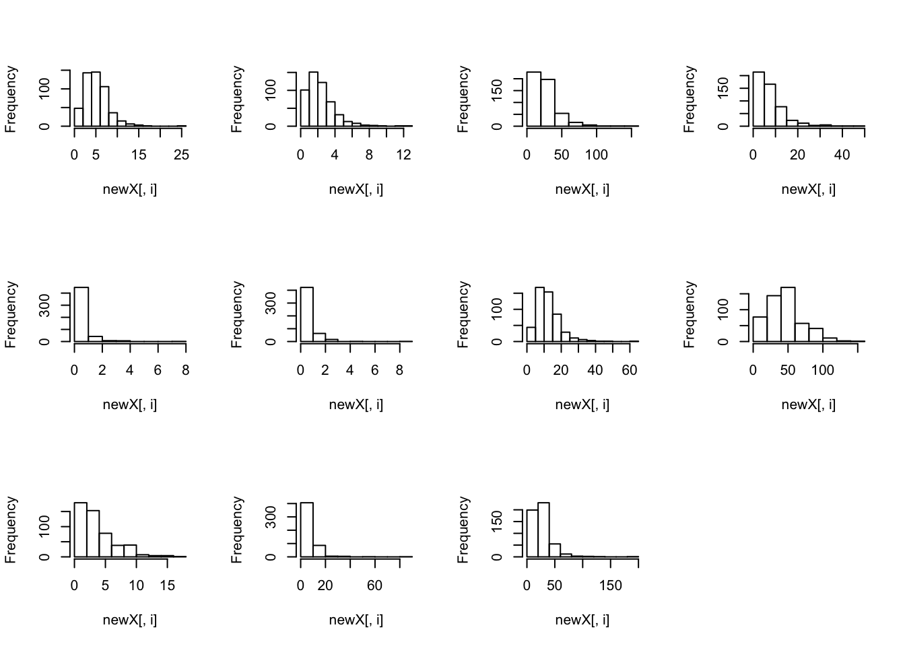
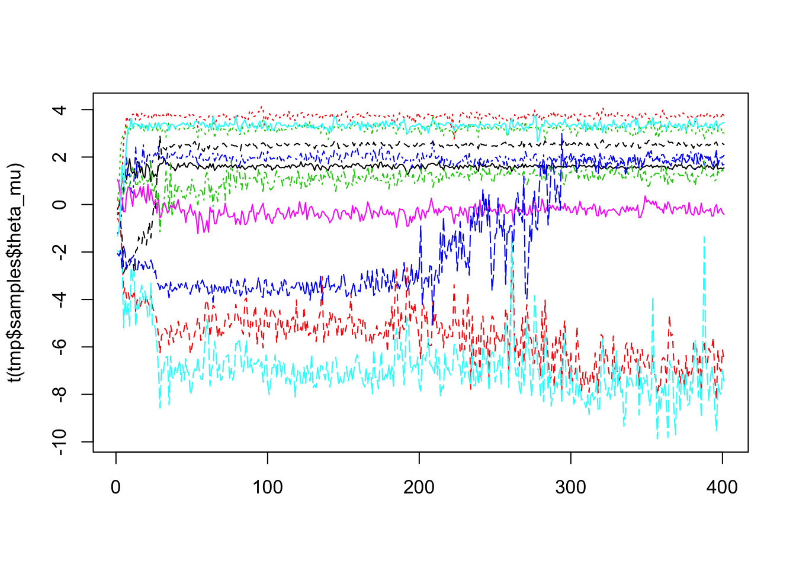
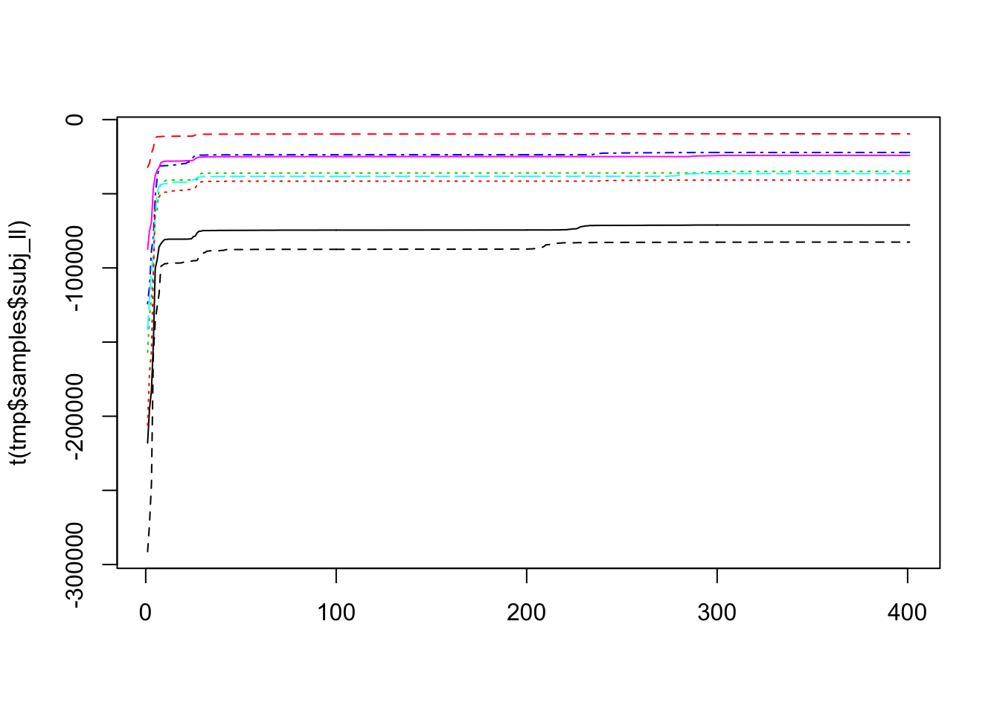
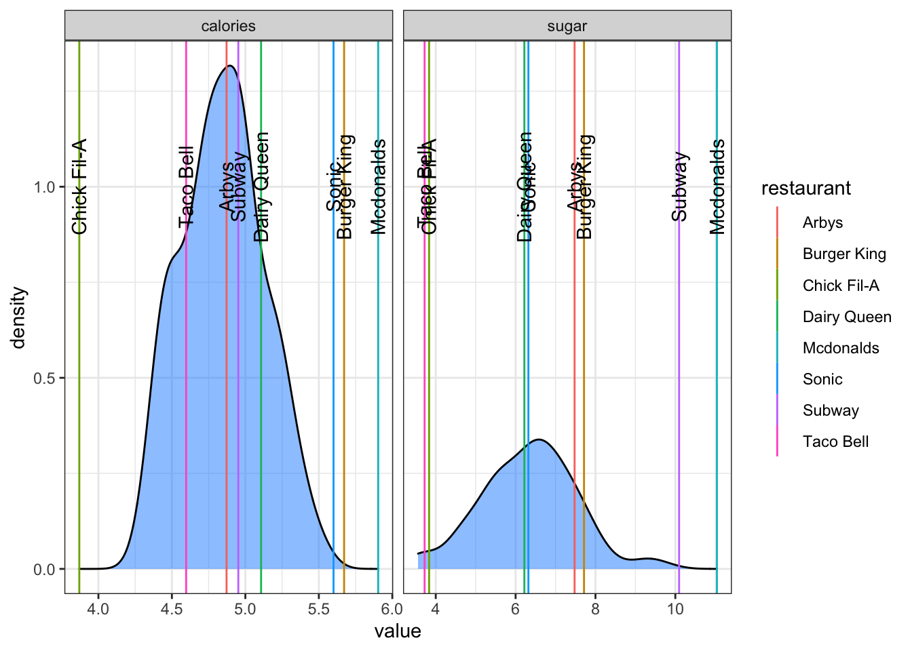
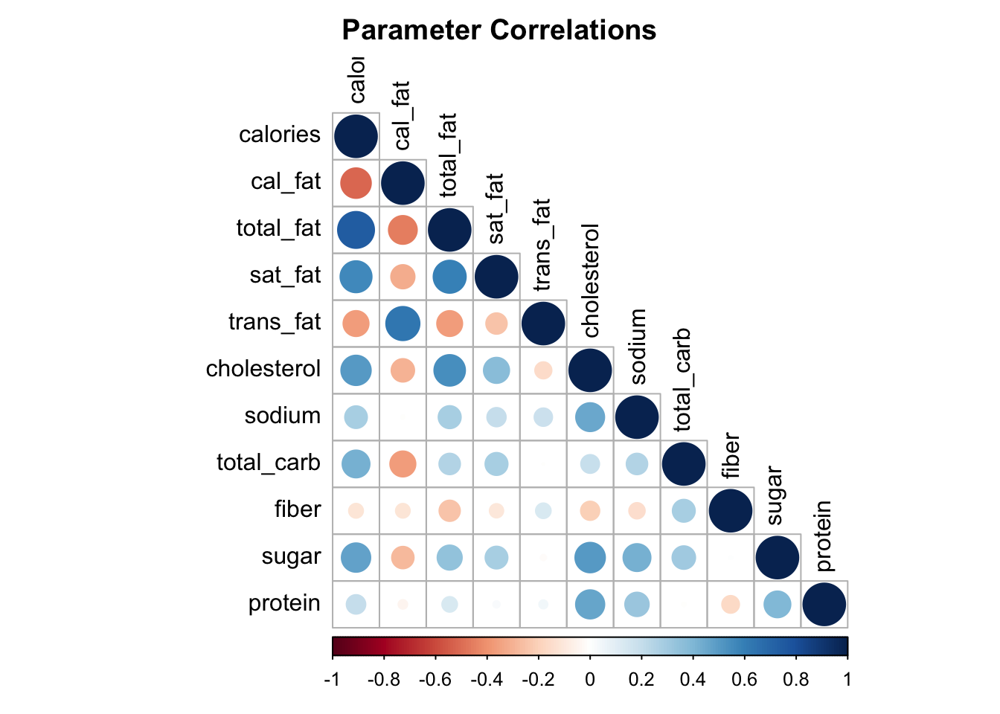

Using PMwG for NOT psychology
This blog post uses the pmwg package for a more generic example than has previously been shown (here for example).
PMwG
The particle metropolis within Gibbs sampling package (pmwg) was created by a team at the University of Newcastle. The package provides functions to estimate Bayesian hierarchical models. What this means is;
Bayesian; probability based, sampling parameters to form a distribution of parameter values, not a point estimate. Gives us uncertainty
hierarchical; multi levels - i.e., a group level and a subject level. Think of a school (the group mean) and classes within the school (each with their own mean)
model-based sampling; propose lots of values for model parameters and find those which are probabilistically most liekly
So far, the package has mainly been used for psychological applications, where lots of data is collected per subject, and this data is then fit with complex models (which cannot be fit with standard methods). For an explanation of the full method see our other documentation or for the full maths, see here
PMwG_new
Recently, working together with Niek Stevenson, we’ve added functionality to the PMwG package. These are not detailed here, however, I do use a couple of these functions as they are pretty neat and usable. The additional functions can be seen here.
Why would we use this?
Well there’s a few reasons. For this example, using PMwG is probably overkill, but it makes a nice example for other situations where we might have many observations and many individuals. These bigger data problems represent more realistic scenarios, but importantly, we would want to get a sense of the group level parameter distribution, as well as the individual subjects’ data. For example, if we had a school with many classes (say 50), where each class included 50 students, then we could estimate a model for each class, which would inform the group level model.
The reason to use PMwG is when we have difficult estimation problems. Many models do not have analytic solutions, and so model estimation is often used to overcome this. Even with an analytic solution, doing hierarchical modelling can be challenging, which is where PMwG shows more usefulness. We could use optim to find the most likely values for a problem, but this is not reliable and only does calculations at one level (group or individual). Further, we could use another sampler (like stan or jags), however, with PMwG we can achieve greater efficiency, there is no reliance on multiple chains or convergence (due to sampler properties) and we can reliably estimate a more complex group level model – including the multivariate normal we use as default which allows us to estimate parameter correlations. The latter point is particularly useful for models with collinearity between parameters (i.e., as x goes up, so does y). I’ll do a blog in future showing just how bad post-hoc correlations between parameters are, and how PMwG overcomes this.
So that’s a lot of reasons to use this method, but lets summarise quickly.
- We use PMwG to estimate statistical models (often with no analytic solution).
- The models we would estimate are able to have their density calculated/approximated.
- The data we model should have many observations (differs depending on model complexity) for a few different individuals (really want at least 20 to inform the group).
- PMwG allows us to do hierarchical modelling. This means we have a group and individual level distribution.
- PMwG is Bayesian. This means we can evaluate a level of certainty of our parameter estimates for neater inference.
- PMwG is reliable and efficient.
- PMwG allows us to estimate between parameter correlations.
The Data
In the following example, I use the the fastfood dataset from the openintro package. The data includes 515 item menus from 8 different fast food restaurants. Each item has 15 metrics to descirbe the nutritional value. Here we only use the first 11 metrics due to missing data (something I’ll address using PMwG in another blog post).
library(openintro)
data <- fastfood[,1:13]Setup
First we need to source the pmwg_new code and set up the environment;
rm(list=ls())
# library(pmwg)
source("pmwg/variants/standard.R")
library(mvtnorm)
library(openintro)Next, we need to clean the data. Here i include a subject column. This is a requirement of the pmwg package - you must include a subject column. Here, the restaurant column is labelled as the subject. This is because I’m going to treat each restaurant as an individual entity, where each food item is an “observation” from their menu.
I also remove the food item label for coding simplicity purposes. Next I’m going to omit any items with missing data, before finally rescaling four metrics for modelling purposes.
NOTE: These four rescaled metrics don’t need to be normalised, but the values are far greater than the other measures. Here, by dividing them all by 100, I don’t have to set different priors (it’s mainly because I’m being lazy).
names(data)[1]<-"subject"
data <- data[c(1,3:13)]
data <- na.omit(data)
data[,c(2,3,7,8)]<- data[,c(2,3,7,8)]/100Here, we don’t have many observations, which makes it hard to estimate. We also probably should have more restaurants, but this serves as a nice intro example
Likelihood Function
The likelihood function is the engine in PMwG. The nicest part of this engine, is that you can craft it yourself, giving lots of flexibility. The likelihood function takes the proposed parameters and calculates the likelihood of these given the subjects’ (restaurants) data and the model you’re using.
Before we write this though, we’re first going to check the shapes of the distributions of nutrition metrics.
par(mfrow=c(3,4))
apply(data[,-1], 2, hist, main = NULL)
Two things are immediately apparent that need to be accounted for in the likelihood. First, all values are greater than 0. Second, we can see that all distributions are positively skewed. We’re going to make sure we do something about these in the likelihood.
Full Function
Shown below is the full likelihood function, but I’ll break it down slowly in this section;
ll <- function(x, data, sample = F ){
x=exp(x)
if(sample == FALSE){
n_pars = length(x)
tmpData = as.matrix(data[,-1])
out = sum(TruncatedNormal::dtmvnorm(tmpData, x, diag(1, nrow = n_pars), lb = rep(0,n_pars), log = T, B = 1))
return(out)
}else{
n_pars = length(x)
Restaurant = data[,1]
tmpData = as.matrix(data[,-1])
out = TruncatedNormal::rtmvnorm(nrow(tmpData), x, diag(1, nrow = n_pars), lb = rep(0,n_pars))
out <- as.data.frame(cbind(out,Restaurant))
return(out)
}
}In the likelihood function, we need to include three main arguments;
xis the vector of proposed (named) parameter valuesdatais the data (note that each time using this will only use data for the one subject being estimated)sample = FALSEis used to specify whether we are sampling from the model (i.e.,TRUE) or calculating the density (FALSE- set as the default)
Transformations
The first thing I do in the likelihood is transform the input parameter values. Knowing that all the values in the data are positive, and therefore any proposed parameters will be positive (using a multivariate normal model), I need to ensure that the parameters are also positive.
Taking the exponent of the proposed parameters means these will be strictly positive. This has implications for the implied prior, but I’ll discuss this in the advanced section later on.
The Model
For this example, I was considering using a multivariate normal model, but I found a truncated multivariate normal function that makes it slightly more interesting and accurate (we’ll do some model comparison below too). When thinking about the “model” we’re using, we’re talking about the model of the data describing the data for each individual.
Looking at the group level distribution above, we can see a skewed distribution, but it’s worthwhile thinking about this distribution per individual restaurant as well. This means we make the assumption that each individual follows this model, and that informs a population level model (and can allow us to generate or predict other restaurants).
For the truncated multivariate model I use the dtmvnorm and rtmvnorm functions from the TruncatedNormal package for density calculation and random generation respectively.
Calculating the Density
Here I say that we calculate the likelihood of the data given some parameter values. All I’m doing here is testing the probability of parameters for each persons data. Before I show the functions, I like to do a small thought exercise to show how this works in practice.
Thought exercise for likelihoods
For this example, let’s generate some data from a normal distribution. Here I make some “parameter” values which I’ll save. These parameters are just mean and standard deviation for the normal.
truePars = c("mean"=6,"sd"=.3)
exampleData <- rnorm(n=1000, mean = truePars["mean"], sd= truePars["sd"])
Now, using this data, I’ll try and input some other parameters to see how likely these are for the data;
# first try
sum(dnorm(exampleData,mean=0,sd=1, log = T))
## [1] -18987.53
# a lot off, so lets shift the mean
sum(dnorm(exampleData,mean=7,sd=1, log = T))
## [1] -1457.357
# what if we move the sd
sum(dnorm(exampleData,mean=6,sd=.5, log = T))
## [1] -396.7043
# now lets try them together
sum(dnorm(exampleData,mean=6.5,sd=.3, log = T))
## [1] -1554.667
# very close
sum(dnorm(exampleData,mean=8,sd=.4, log = T))
## [1] -12715.82
# too far
sum(dnorm(exampleData,mean = truePars["mean"], sd= truePars["sd"], log = T))
## [1] -189.724
# niceWe can see how the probability increases as we get closer to the generating values. In PMwG, this process is taken care of under the hood. Hopefully this shows just what the algorithm is trying to do. This is also a good test for your model, where likelihood should increase with “better” test values. It’s also a good idea to do simulation and recovery to make sure your model “works”. This means generating values and then fitting the model with the goal of obtaining the generated values. If it doesn’t recover, there could be something wrong with the code, not enough data per condition/individual or the model does not recover.
Density function
The density function is shown below;
if(sample == FALSE){
n_pars = length(x)
tmpData = as.matrix(data[,-1])
out = sum(TruncatedNormal::dtmvnorm(tmpData, x, diag(1, nrow = n_pars), lb = rep(0,n_pars), log = T, B = 1)) #B=1 because otherwise it does many iterations and takes too long
return(out)
}
There are four steps in the getting the likelihood. First I grab the number of parameters. Second, I remove the names from the data for coding simplicity. Then I do the important part. Finally, I return a single value (the likelihood).
For the important part here, I take the sum of all the densities as they are on the log scale (otherwise I would multiply). Using the dtmvnorm function, I include the data, where each row is an observation and each column is a different metric. The means are given by the parameters (x). I use an sd of 1 for the covariance. I also include a lower bound of 0 for all metrics.
Importantly, all I’m doing here is checking how well the parameters fit the data, just as in the thought exercise above. This means that the density is calculated for each data point (i.e., each observation or food item), and then multiplied together (summed here because I use logs for simplicity).
Random generation
In a very similar sense, to generate random data, I use the inverse functionality.
else{
n_pars = length(x)
Restaurant = data[,1] #remove the name column
tmpData = as.matrix(data[,-1])
out = TruncatedNormal::rtmvnorm(nrow(tmpData), x, diag(1, nrow = n_pars), lb = rep(0,n_pars))
out <- as.data.frame(cbind(out,Restaurant)) #add the name column back on
return(out)
}
What this allows us to do is generate data, given some input parameters for a single subject.
PMwG Functions
Now I’ve done all the setup, I just need to prepare the sampler. To do this, first we need to specify the vector of parameter names. These will be used by the sampler.
pars=names(data)[-1]
Priors
Next I need to specify some priors. This can be daunting and stressful. But it really doesn’t need to be, especially with PMwG. The prior specification here is for the group level model. PMwG assumes that the group level distribution of parameters (i.e., the means for each restaurant - NOT the truncated model) are distributed according to a multivariate normal distribution. For this prior, we only need to set the mean and the variance.
The prior influences which parameter values are proposed. Here, I set the mean to 0 and variance to 10. Mean to 0?? Yes, because proposals come from a range of -Inf to Inf. In our likelihood we take care of these by taking the exponential of them, so really, the mean here is exp(0) = 1. I set the variance to 10 so that a wide range of values are used, but given our exponential transformation, I could probably keep this at 1.
For the rest of PMwG priors, we don’t need to consider the prior shapes of distributions of group level parameters as many researchers stress about with other fitting methods.
priors <- list(
theta_mu_mean = rep(0, length(pars)),
theta_mu_var = diag(rep(10, length(pars))))
The sampler
Finally, we can set up the sampler and run the algorithm. To set up the sampler, we use the pmwgs function, where we need to include data,pars,priors and ll_func. Then we can intialise the sampler.
Here, the data must have a subject column so that the data can be split into data for each individual. The pars arguments should include any parameters used in the model to be estimated. Any prior should have a theta_mu_mean vector and a theta_mu_var matrix (mean and variance) of length pars and pars * pars respectively.
# Create the Particle Metropolis within Gibbs sampler object ------------------
sampler <- pmwgs(
data = data,
pars = pars,
prior = priors,
ll_func = ll
)
sampler <- init(sampler) # i don't use any start points hereSampling
When this is done, we can finally do the sampling!! For sampling, there are three stages. The specifics of these can be seen here. the tldr version of this is;
burnused for initial burn-in samples (the throwaway samples) to get to the posterior distributionadaptused to create the efficient distribution in sampling. This stage will stop if the efficient distribution can be created.sampleefficiently sample from the posterior
Note that you don’t need to run each stage, you might just run burn-in and throw away the initial samples. However, we’ve seen significant improvements in the quality of samples from the final efficient stage.
For the run_stage argument, we need to include the sampler object, the stage we’re running, the number of iterations, particles and computer cores. For iterations and particles, this could take some fine tuning for the user, however, we tend to use 1000 burn-in iterations, 5000 adaptation and then however many desired samples for the final stage. We generally use either 100 or 300 particles depending on the model complexity. Here I use the pmwg_new function pstar. This adapts the “acceptance rate” - basically making the sampler more efficient. For more info on all the arguments, see here.
In this example, the model is simple and easy to estimate, so I dial back some of these tuning parameters. To know the best settings to use, you might start with something like below and then tinker as you see fit.
sampled <- run_stage(sampler, stage = "burn",iter = 100, particles = 100, n_cores = 4, pstar=.6) #epsion will set automatically to 0.5
sampled <- run_stage(sampled, stage = "adapt",iter = 500, particles = 100, n_cores = 4, pstar=.6)
sampled <- run_stage(sampled, stage = "sample",iter = 100, particles = 50, n_cores = 4, pstar=.6)
NOTE: This will take a few minutes to run. Increasing the number of particles or iterations will slow the sampler down. However, we need to reach the posterior (i.e., the good values for the parameters), and to do this we need good information. This means that we may need more particles or iterations. Ideally, for efficiency, we should aim for between 30 and 80% acceptance rate. Here, pstar helps as I can specify a desired acceptance rate.
Output
Once our sampler is finished, we can check the output.
Checking
First, we should check that we are in the posterior. To do this, we can check the chain plots of the samples. Here we show two plots. The first is the group level parameter chains and the second is the individual subject likelihood chains. For the parameter chains, we’re looking for “stationarity” in the samples. This means that the sampled values will show a flat line with a bit of wiggle (like a hairy caterpillar). For the subject likelihood, we’re looking for flat lines as well, however, we should see an increase in these from the start to the end. These will be less wiggly. See here for more details on this output.
tmp <- sampled
matplot(t(tmp$samples$theta_mu),type="l")
matplot(t(tmp$samples$subj_ll),type="l")
Here we can see that some parameters only reach the posterior in the final sampling stage (x-axis is iterations of sampling). We can see however, that stationarity is reached. Secondly, we can see that the likelihood increases and then stabilizes at the highest value for each restaurant.
Posterior Inference
Next, we can look at the sampled values. Here I show group level and inidvidual restaurant level parameter values. Remember that by model sampling, we generate distributions of possible parameter values, so here, I take the median of these values. I also transform these as I did in the likelihood.
groupMedian <- apply(tmp$samples$theta_mu[,tmp$samples$stage=="sample"],1,median)
round(exp(groupMedian),3)
## calories cal_fat total_fat sat_fat trans_fat cholesterol
## 4.842 0.001 23.322 6.782 0.000 0.816
## sodium total_carb fiber sugar protein
## 12.661 41.485 3.470 6.421 28.770
restaurantMedian <- apply(tmp$samples$alpha[,,tmp$samples$stage=="sample"],1:2, median)
round(exp(restaurantMedian),3)
## Mcdonalds Chick Fil-A Sonic Arbys Burger King Dairy Queen Subway
## calories 5.904 3.870 5.600 4.872 5.672 5.107 4.952
## cal_fat 0.000 0.006 0.000 0.006 0.000 0.003 0.000
## total_fat 31.947 14.475 37.683 26.708 34.755 29.038 18.584
## sat_fat 8.204 3.186 10.982 8.050 10.414 10.415 5.950
## trans_fat 0.000 0.000 0.000 0.004 0.000 0.000 0.002
## cholesterol 1.541 0.596 1.180 0.900 0.884 0.819 0.737
## sodium 14.550 10.735 13.711 15.157 11.673 11.413 12.802
## total_carb 48.858 25.488 47.153 44.797 37.188 38.741 54.857
## fiber 3.394 2.687 2.972 3.022 2.358 3.418 6.606
## sugar 11.041 3.834 6.320 7.477 7.713 6.219 10.094
## protein 40.386 30.841 29.280 29.165 29.285 24.947 30.244
## Taco Bell
## calories 4.597
## cal_fat 0.000
## total_fat 20.861
## sat_fat 6.409
## trans_fat 0.000
## cholesterol 0.506
## sodium 10.164
## total_carb 46.599
## fiber 5.707
## sugar 3.721
## protein 17.390We can see the mean values overall, but that’s not overly meaningful. The more meaningful estimates are at the individual level.
We can also look at the distribution of the group parameter values and see how restaurants compare to the group distribution. I’ve only shown two parameters here, but this is a nice example.
library(tidyr)
library(ggplot2)
eg <- apply(tmp$samples$alpha[c(1,10),,tmp$samples$stage=="sample"],1:2, median)
eg<-round(exp(eg),3)
group <- exp(tmp$samples$theta_mu[c(1,10),tmp$samples$stage=="sample"])
group <- as.data.frame(t(group))
eg <- as.data.frame(t(eg))
eg$restaurant <- row.names(eg)
group <- pivot_longer(group, cols = everything(), names_to = "metric", values_to = "value")
eg <- pivot_longer(eg, cols = c("calories","sugar"), names_to = "metric", values_to = "value")
# add vertical mean line to density plot with geom_vline()
ggplot(group, aes(x=value)) +
geom_density( fill="dodgerblue", alpha=0.5)+
geom_vline(data=eg,aes(xintercept=value,colour = restaurant), size=.5)+
geom_text(data=eg,aes(x=value,label = restaurant,y=1), angle=90)+
theme_bw()+
facet_grid(~metric, scales = "free")
Anything unexpected here?
Correlations
Finally, one strength of PMwG is that it assumes a group level multivariate model, with variance given by a covariance matrix. This means we can see correlations between parameters of the model - something that can be very useful with models with multiple components. An example of this is shown below;
cov<-apply(tmp$samples$theta_var[,,tmp$samples$stage=="sample"],1:2, median)
colnames(cov)<-tmp$par_names
rownames(cov)<-tmp$par_names
cor<-cov2cor(cov) #correlation matrix
library(corrplot)
## corrplot 0.84 loaded
corrplot(cor, method="circle", type = "lower", title = "Parameter Correlations", tl.col = "black",mar=c(0,0,2,0))
Model Comparison
Let’s say we wanted to compare our model (the truncated normal) to something else (standard multivariate normal). How could we do this??
First, let’s write the likelihood function;
ll <- function(x, data, sample = F ){
x=exp(x)
if(sample == FALSE){
n_pars = length(x)
tmpData = as.matrix(data[,-1])
out = sum(mvtnorm::dmvnorm(tmpData, x, diag(1, nrow = n_pars), log = T)) # only change is here to the model
return(out)
}else{
n_pars = length(x)
Restaurant = data[,1]
tmpData = as.matrix(data[,-1])
out = mvtnorm::rmvnorm(nrow(tmpData), x, diag(1, nrow = n_pars), log = T)
out <- as.data.frame(cbind(out,Restaurant))
return(out)
}
}I ran this model using the exact same code (apart from the likelihood), but I’ve included it below;
rm(list=ls())
# library(pmwg)
setwd("~/Documents/Research/Amsterdam/Code")
source("pmwg/variants/standard.R")
library(TruncatedNormal)
library(openintro)
data <- fastfood[,1:13]
names(data)[1]<-"subject"
data <- data[c(1,3:13)]
data <- na.omit(data)
data[,c(2,3,7,8)]<- data[,c(2,3,7,8)]/100
## plots
par(mfrow=c(4,3))
apply(data[,-1], 2, hist, main = NULL)
dev.off()
### likelihood
ll <- function(x, data, sample = F ){
x=exp(x)
if(sample == FALSE){
n_pars = length(x)
tmpData = as.matrix(data[,-1])
out = sum(mvtnorm::dmvnorm(tmpData, x, diag(1, nrow = n_pars), log = T)) # only change is here to the model
return(out)
}else{
n_pars = length(x)
Restaurant = data[,1]
tmpData = as.matrix(data[,-1])
out = mvtnorm::rmvnorm(nrow(tmpData), x, diag(1, nrow = n_pars), log = T)
out <- as.data.frame(cbind(out,Restaurant))
return(out)
}
}
pars=names(data)[-1]
priors <- list(
theta_mu_mean = rep(0, length(pars)),
theta_mu_var = diag(rep(10, length(pars))))
# Create the Particle Metropolis within Gibbs sampler object ------------------
sampler <- pmwgs(
data = data,
pars = pars,
prior = priors,
ll_func = ll
)
sampler <- init(sampler) # i don't use any start points here
sampled <- run_stage(sampler, stage = "burn",iter = 100, particles = 100, n_cores = 4, pstar=.6) #epsion will set automatically to 0.5
sampled <- run_stage(sampled, stage = "adapt",iter = 500, particles = 100, n_cores = 4, pstar=.6)
sampled <- run_stage(sampled, stage = "sample",iter = 200, particles = 50, n_cores = 4, pstar=.6)
Now we have our two sampled objects, we can do model comparison. For some advanced model comparison methods, see here. For now though, we’re going to compare using a criterion method. Here, the smaller value represents the more likely model. The function for the deviance information criterion (DIC) is below
pmwg.DIC=function(sampled,pD=FALSE){
nsubj=length(unique(sampled$data$subject))
# the mean likelihood of the overall (sampled-stage) model, separately for each subject
mean.like <- apply(sampled$samples$subj_ll[,sampled$samples$stage=="sample"],1,mean)
# the mean of each parameter across iterations. Keep dimensions for parameters and subjects
mean.params <- t(apply(sampled$samples$alpha[,,sampled$samples$stage=="sample"],1:2,mean))
# i name mean.params here so it can be used by the log_like function
colnames(mean.params)<-sampled$par_names
# log-likelihood for each subject using their mean parameter vector
mean.params.like <- numeric(ncol(mean.params))
data <- transform(sampled$data, subject=match(subject, unique(subject)))
for (j in 1:nsubj) {
mean.params.like[j] <- sampled$ll_func(mean.params[j,], data=data[data$subject==j,], sample=FALSE)
}
# Effective number of parameters
pD <- sum(-2*mean.like + 2*mean.params.like)
# Deviance Information Criterion
DIC <- sum(-4*mean.like + 2*mean.params.like)
if (pD){
return(c("DIC"=DIC,"effective parameters"=pD))
}else{
return(DIC)
}
}
Now all we need to do is load our two sampled objects and compare!
## Warning in -2 * mean.like + 2 * mean.params.like: longer object length is not a
## multiple of shorter object length
## Warning in -4 * mean.like + 2 * mean.params.like: longer object length is not a
## multiple of shorter object length
## DIC effective parameters
## 1105994.4 231328.4
## Warning in -2 * mean.like + 2 * mean.params.like: longer object length is not a
## multiple of shorter object length
## Warning in -2 * mean.like + 2 * mean.params.like: longer object length is not a
## multiple of shorter object length
## DIC effective parameters
## 1115781.3 231675.7# First load in the sampled object for the truncated multivariate normal model
load("fastFood_samples_tmvn.RData")
# test
pmwg.DIC(sampled)
# First load in the sampled object for the truncated multivariate normal model
load("fastFood_samples_mvn.RData")
# test
pmwg.DIC(sampled)
Evidently, we can see that the smaller DIC value was for our truncated normal model - so we made a good choice picking this one first ;)
Final Word
In this data set, there are only 8 restaurants. Usually for a hierarchical model, we would want at least 20 individuals. Additionally, there are very few observations per restaurant. Similar to the group level, we want a well informed individual level model. The model still works, but because of the low amount of data, there is greater uncertainty.
So it’s not the best data set, but hey, it makes for a nice example. I’ve also been brief with a few explanations on specifics, the algorithm and some function arguments, but this is for brevity (and because they’re generally not super important). If you want to know more about specifics, please see the bookdown. Hopefully for users outside of psychology (or even outside of decision making modelling), this example can help contextualize the bookdown.
Happy coding!
Reilly
Reilly Innes
Post Doc Researcher
Researching cognitive workload, computational modelling and decision making.